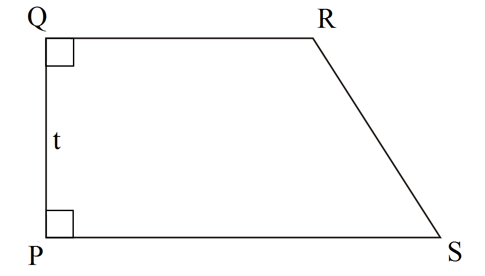

EVALUASI
Latihan Soal Bentuk Akar
SOAL LATIHAN dan PEMBAHASAN MATEMATIKA
1. Bentuk sederhana dari √80 adalah…
a. 5√4
b. 5√5
c. 4√5
d. 6√5
Alternatif Pembahasan:
√80
= √4 x √20
= √4 x √4 x √5
= 2x2 x √5
= 4√5
Pilihan yang sesuai adalah (c) 4√5
2. Hasil dari √175 + 4√7 - √63 adalah…
a. 5√7
b. 6√7
c. 8√7
d. 9√7
Alternatif Pembahasan:
√175 + 4√7 - √63
= √25√7 + 4√7 - √9√7
= 5√7 + 4√7 - 3√7
= (5+4-3)√7
= 6√7
Pilihan yang sesuai adalah (b) 6√7
3. Hasil dari √15 x √12 adalah…
a. 4√3
b. 4√5
c. 6√3
d. 6√5
Alternatif Pembahasan:
√15 x √12
= (√5 x √3) x (√4 x √3)
= √5 x √4 x √3 x √3
= √5 x 2 x 3
= 6√5
Pilihan yang sesuai adalah (d) 6√5
4. Hasil dari √6 (3√8 + √32) adalah…
a. 12√2
b. 18√3
c. 20√2
d. 20√3
Alternatif Pembahasan:
√6 (3√8 + √32) = √6 (3√4√2 + √16√2)
= √6 (6√2 + 4√2)
= √6 (10√2)
= 10√12
= 10 √4 √3
= 20√3
Pilihan yang sesuai adalah (d) 20√3
5. Diketahui p=√3 + √5 dan q=5√3 - 2√3. Nilai pq adalah…
a. 9-3√15
b. 9-7√15
c. 9+3√15
d. 9+7√15
Alternatif Pembahasan:
pq = (√3 + √5)(5√3 - 2√3)
= 5√3√3 - 2√3√3 + 5√5√3 - 2√5√3
= 15 – 6 + 5√15 - 2√15
= 9 + (5-2) √15
= 9 + 3√15
Pilihan yang sesuai adalah (c) 9 + 3√15
6. Hasil dari (√5 - √2)(√2 + √5)² adalah…
a. 3√5 + 3√2
b. 3√5 - 3√2
c. 3√2 - 3√5
d. -3√5 - 3√2
Alternatif Pembahasan:
(√2 + √5)² =(√2 + √5)(√2 + √5)
= √2√2 +√2√5 + √2√5 +√5√5
= 2 + √10 + √10 + 5
= 7 + 2√10
Maka,
(√5 - √2)(√2 + √5)² = (√5 - √2)( 7 + 2√10)
= 7√5 + 2√5√10 - 7√2 - 2√2√10
= 7√5 + 2√50 - 7√2 - 2√20
= 7√5 + 2√25√2 - 7√2 - 2√4√5
= 7√5 + 10√2 - 7√2 - 4√5
= (7-4) √5 + (10-7) √2
= 3√5 + 3√2
Pilihan yang sesuai adalah (a) 3√5 + 3√2
7. Bentuk sederhana dari [(2+√8)/√6] adalah…
a. ⅓(√6 + 2√3)
b. ⅓(2√6 + √3)
c. ⅓(√6 + √3)
d. ⅔(√6 + √3)
Alternatif Pembahasan:
[(2+√8)/√6]
= [(2+√8)/√6] x [√6/√6]
= √6 (2+√8) /6
= 2√6 +√48 / 6
= (2√6+√16√3)/6
=(2√6 + 4√3)/6
= (√6 + 2√3)/3
= ⅓(√6 + 2√3)
Pilihan yang sesuai adalah (a) ⅓(√6 + 2√3)
8. Diketahui m x (2√3 - √7) = 10. Nilai m yang memenuhi adalah…
a. 4√3 - 2√7
b. 4√3 + 2√7
c. 2√3 - 4√7
d. 2√3 + 4√7
Alternatif Pembahasan:
m x (2√3 - √7) = 10
m = 10/(2√3 - √7)
m = 10/(2√3 - √7)
= 10/(2√3 - √7) x (2√3 + √7)/ (2√3 + √7)
= 10(2√3 + √7)/12-7
= (20√3 + 10√7)/5
= 4√3 + 2√7
Pilihan yang sesuai adalah (b) 4√3 + 2√7
9. Bentuk sederhana dari (√2/(√7 - √5)) adalah…
a. ½(√14 + √10)
b. ½(√14 - √10)
c. - ½(√14 - √10)
d. - ½(√14 + √10)
Alternatif Pembahasan:
(√2/(√7 - √5))
= (√2/(√7 - √5)) x (√7 + √5)/ (√7 + √5)
= (√2(√7 + √5))/(7-5)
= (√14 + √10)/2
= ½ (√14 + √10)
Pilihan yang sesuai adalah (a) ½ (√14 + √10)
10.Bentuk sederhana dari (6√10/(√5 + √2)) adalah…
a. 5√2 - 2√5
b. 10√2 - 4√5
c. 5√2 + 2√5
d. 10√2 + 4√5
Alternatif Pembahasan:
(6√10/(√5 + √2))
= (6√10/(√5 + √2)) x ((√5 - √2)/ (√5 - √2))
= (6√10 (√5 - √2))/ (5 - 2)
= (6√50 - 6√20) / 3
= 2√25√2 - 2√4√5
= 10√2 - 4√5
Pilihan yang sesuai adalah (b) 10√2 - 4√5
11.Jika a=(√3/(3-√3)) dan b=((3-√3)/6), maka nilai a/b adalah…
a. 2√3+3
b. 3√3+2
c. 2√3-3
d. 3√3-2
Alternatif Pembahasan:
a/b = (√3/(3-√3))/((3-√3)/6)
= (√3/(3-√3)) x (6/(3-√3))
= 6√3 / (9-6√3+3)
= 6√3 / 12-6√3
= (6√3 / (12-6√3)) x ((12+6√3)/(12+6√3))
= (6√3 (12+6√3))/(144-108)
= (72√3 + 108) / 36
= 2√3 + 3
Pilihan yang sesuai adalah (a) 2√3 + 3
12.Suatu persegi panjang mempunyai ukuran panjang [(15√7) /√3] dan lebar (36/√21).Luas persegi panjang tersebut … cm²
a. 210
b. 180
c. 180√3
d. 180√7
Alternatif Pembahasan:
((15√7) /√3)
= ((15√7) /√3) x (√3/√3)
= 15√21 / 3
= 5√21
Luas persegi panjang = panjang x lebar
= ((15√7) /√3) x (36/√21)
= 5√21 x (36/√21)
= ((5 x 36)√21) / √21
= 5 x 36
= 180 cm²
Pilihan yang sesuai adalah (b) 180 cm²
13.Sebuah kubus memiliki panjang rusuk [1/(2-√2)] cm. Luas permukaan kubus tersebut adalah…
a. 6 + 9√2
b. 8 + 6√2
c. 9 + 6√2
d. 12 + 9√2
Alternatif Pembahasan:
Panjang rusuk (s) = 1/(2-√2)
Luas permukaan kubus = 6s²
= 6 [1/(2 - √2)] ²
= 6 (1/(2 - √2))( 1/(2 - √2))
= 6 (1/(4 - 2√2 - 2√2 + 2))
= 6(1/(6 - 4√2))
= [6/(6 - 4√2)] x [(6 + 4√2)/(6 + 4√2)]
= [6(6 + 4√2)]/36 - 32
= [6(6 + 4√2)]/4
= (36 + 24√2)/4
= 9 + 6√2
Pilihan yang sesuai adalah (c) 9 + 6√2
14.Sebuah trapesium siku-siku mempunyai tinggi 4√3 cm. Jika panjang sisi sejajarnya 7√3 cm dan 10√3 cm, keliling trapesium tersebut adalah… cm
a. 24√3
b. 26√3
c. 28√3
d. 30√3
Alternatif Pembahasan:
Misalkan sebuah trapesium PQRS seperti berikut :

Pada soal, Diketahui QP = 4√3 cm, QR = 7√3 cm, PS = 10√3 cm Dan RS tidak diketahui.
Berikut cara mendapatkannya:
RS²= XR² + QP²
RS²= (3√3)² + (4√3)²
RS²= 27 + 48
RS²= 75
RS = √75
RS = 5√3
Keliling trapesium = Jumlah semua rusuk
Keliling trapesium = PS + RS + QR + QP
Keliling trapesium = 10√3 + 5√3 + 7√3 + 4√3
Keliling trapesium = (10 + 5 + 7 + 4)√3 = 26√3
Pilihan yang sesuai adalah (d) 26√3
15.Diketahui panjang dan lebar sebuah persegi panjang berturut-turut adalah 24 cm dan 7 cm.Panjang diagonal persegi panjang tersebut adalah... cm
a. 20
b. 25
c. 10√6
d. 15√2
Alternatif Pembahasan:
d = √(24² + 7²)
d = √(576 + 49)
d = √625
d = 25
Pilihan yang sesuai adalah (b) 25